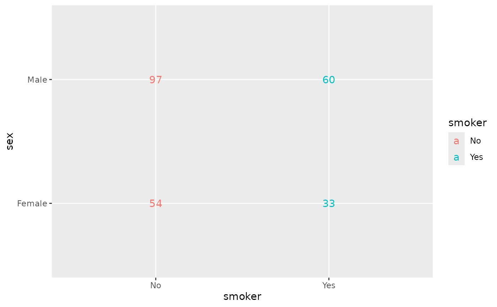
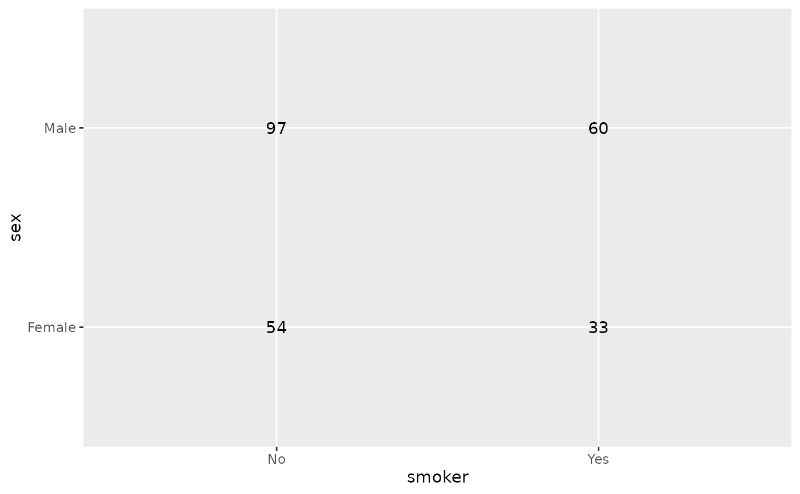
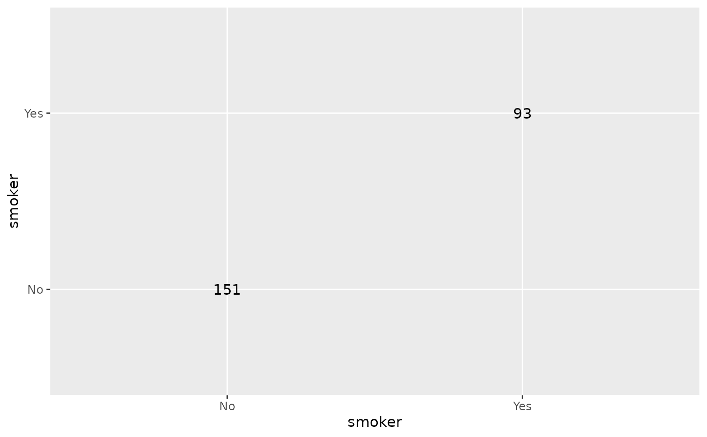
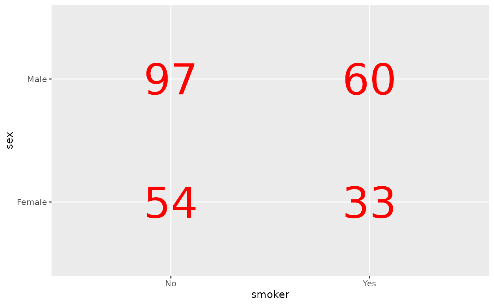
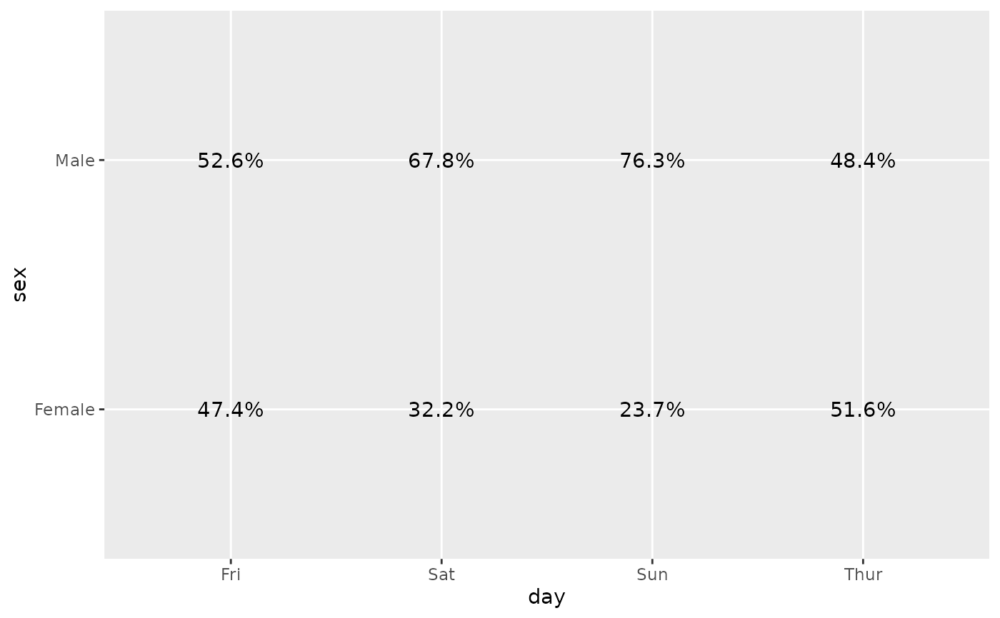
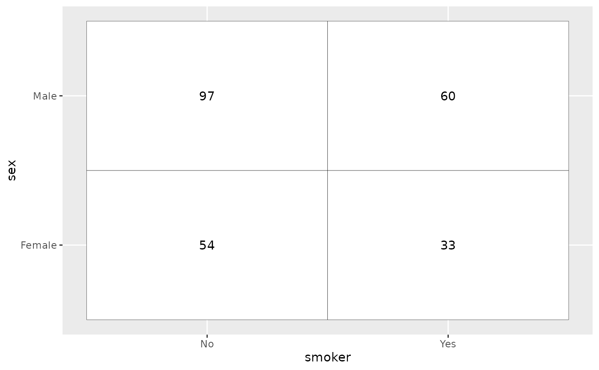
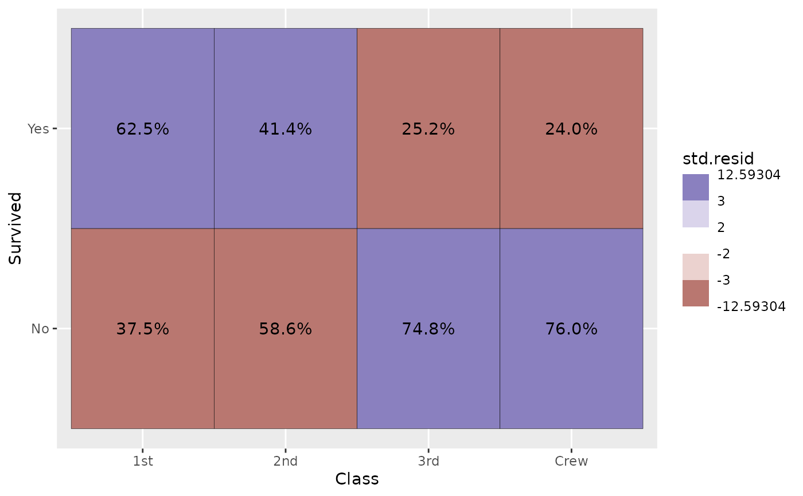

Plot the number of observations as a table. Other statistics computed
by stat_cross could be used (see examples).
ggally_table( data, mapping, keep.zero.cells = FALSE, ..., geom_tile_args = NULL ) ggally_tableDiag( data, mapping, keep.zero.cells = FALSE, ..., geom_tile_args = NULL )
Arguments
| data | data set using |
|---|---|
| mapping | aesthetics being used |
| keep.zero.cells | If |
| ... | other arguments passed to |
| geom_tile_args | other arguments passed to |
Note
The colour aesthetic is taken into account only if equal to x or y.
Author
Joseph Larmarange
Examples
# Small function to display plots only if it's interactive p_ <- GGally::print_if_interactive data(tips, package = "reshape") p_(ggally_table(tips, mapping = aes(x = smoker, y = sex)))p_(ggally_table(tips, mapping = aes(x = day, y = time)))p_(ggally_table(tips, mapping = aes(x = smoker, y = sex, colour = smoker)))# colour is kept only if equal to x or y p_(ggally_table(tips, mapping = aes(x = smoker, y = sex, colour = day)))# diagonal version p_(ggally_tableDiag(tips, mapping = aes(x = smoker)))# custom label size and color p_(ggally_table(tips, mapping = aes(x = smoker, y = sex), size = 16, color = "red"))# display column proportions p_(ggally_table( tips, mapping = aes(x = day, y = sex, label = scales::percent(after_stat(col.prop))) ))# draw table cells p_(ggally_table( tips, mapping = aes(x = smoker, y = sex), geom_tile_args = list(colour = "black", fill = "white") ))# Use standardized residuals to fill table cells p_(ggally_table( as.data.frame(Titanic), mapping = aes( x = Class, y = Survived, weight = Freq, fill = after_stat(std.resid), label = scales::percent(after_stat(col.prop), accuracy = .1) ), geom_tile_args = list(colour = "black") ) + scale_fill_steps2(breaks = c(-3, -2, 2, 3), show.limits = TRUE))